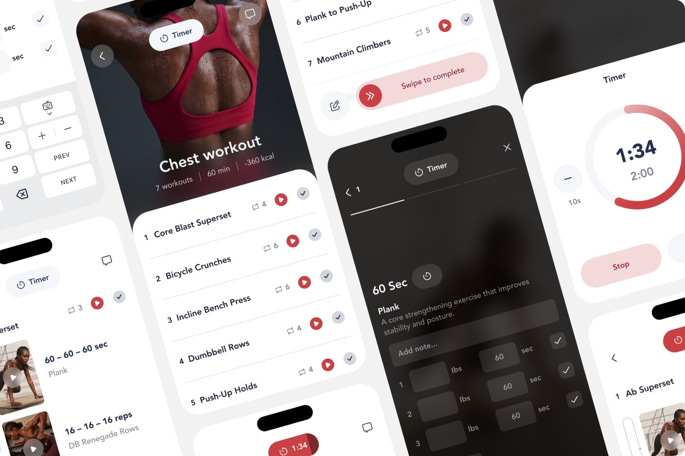
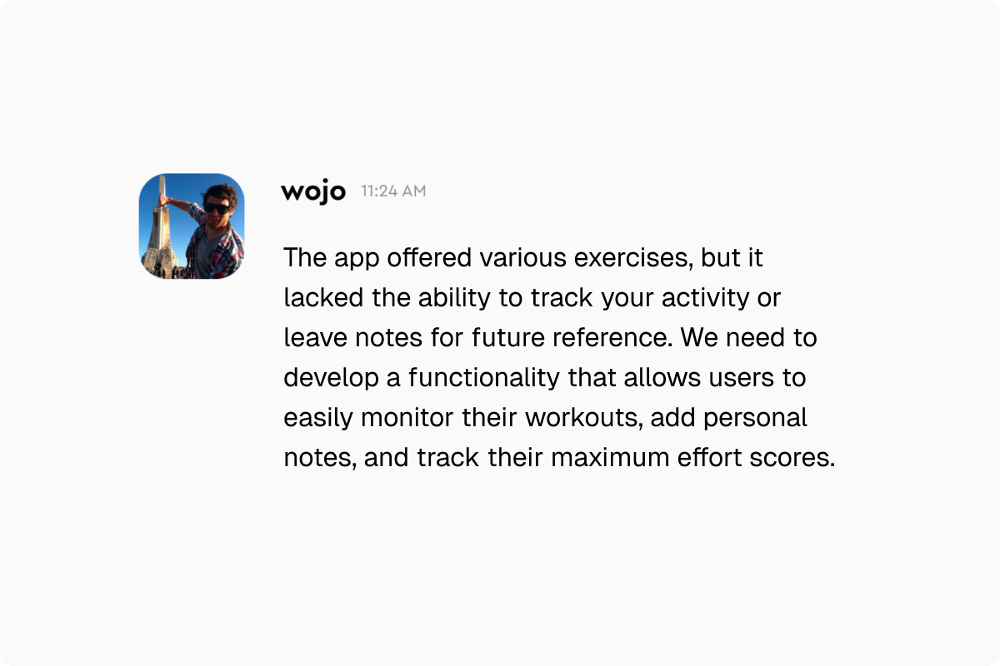
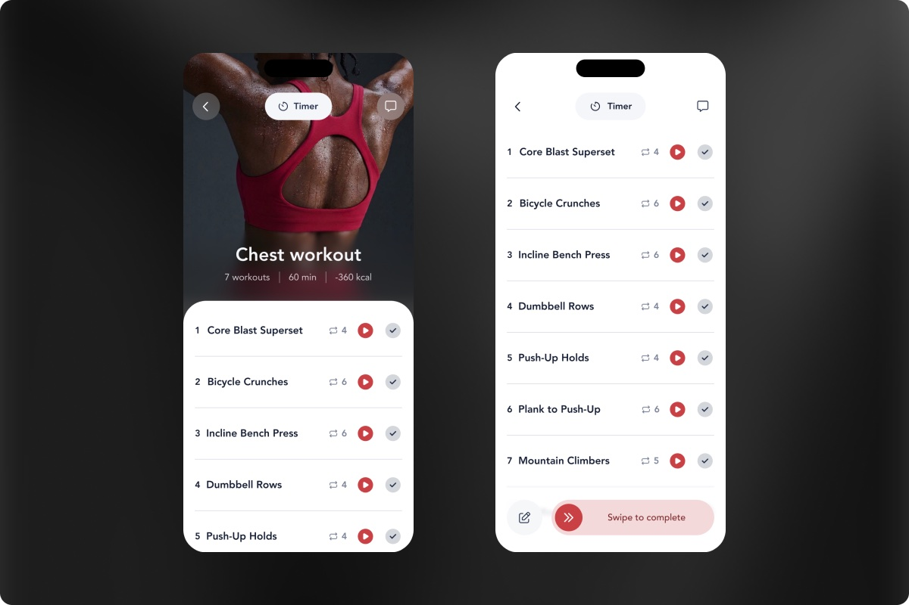
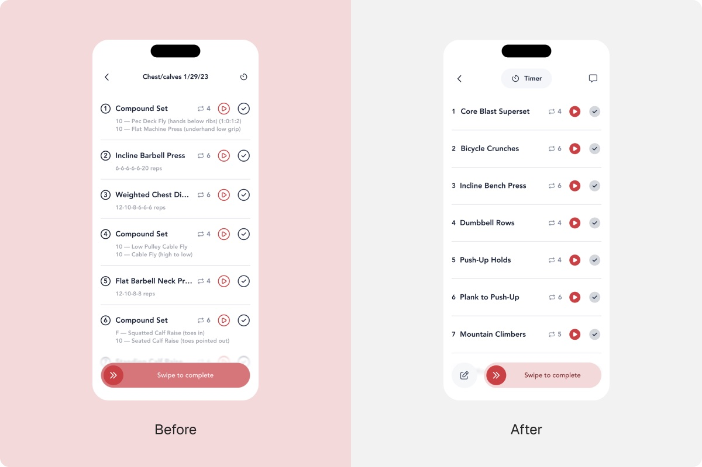
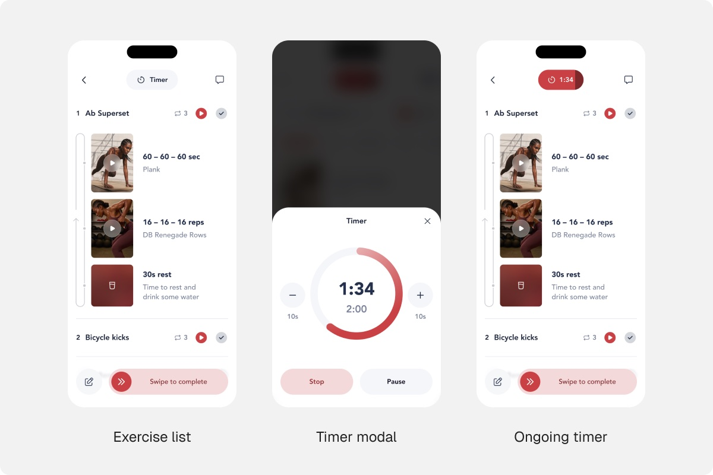
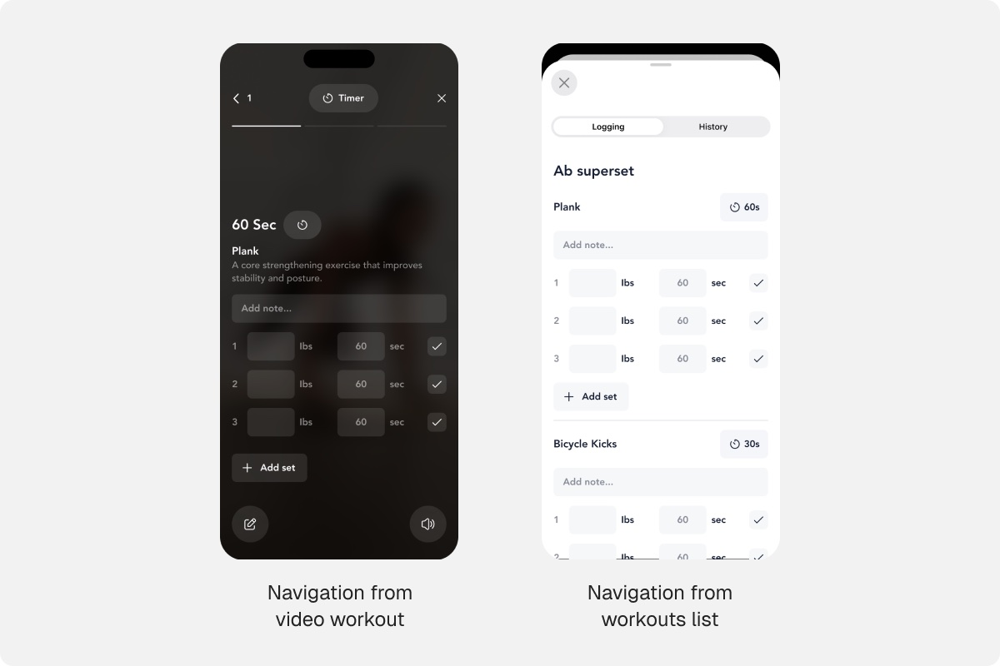
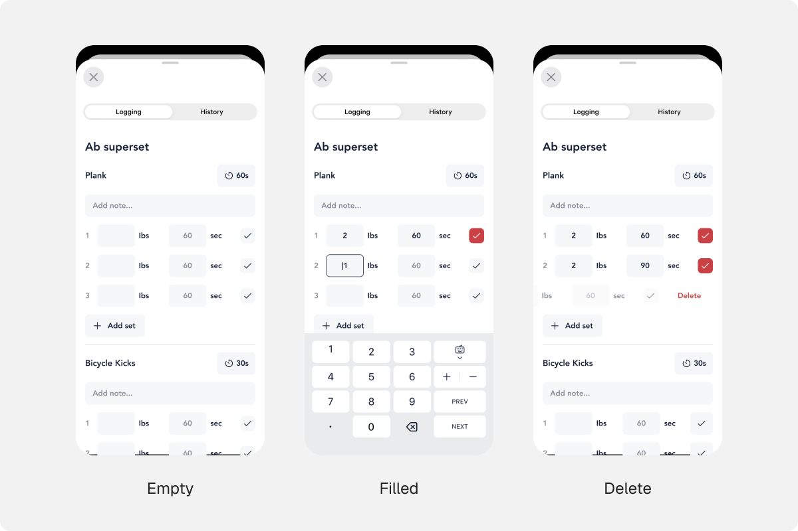
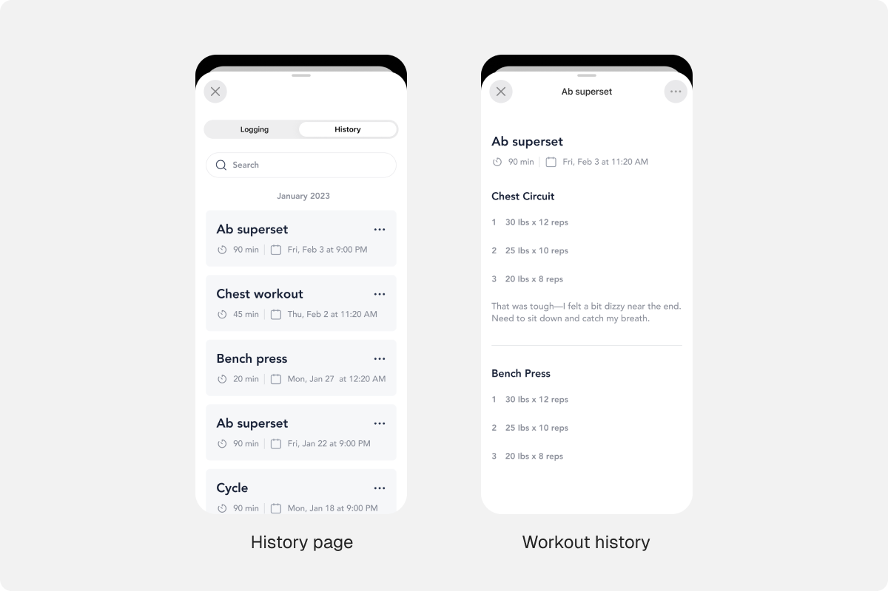
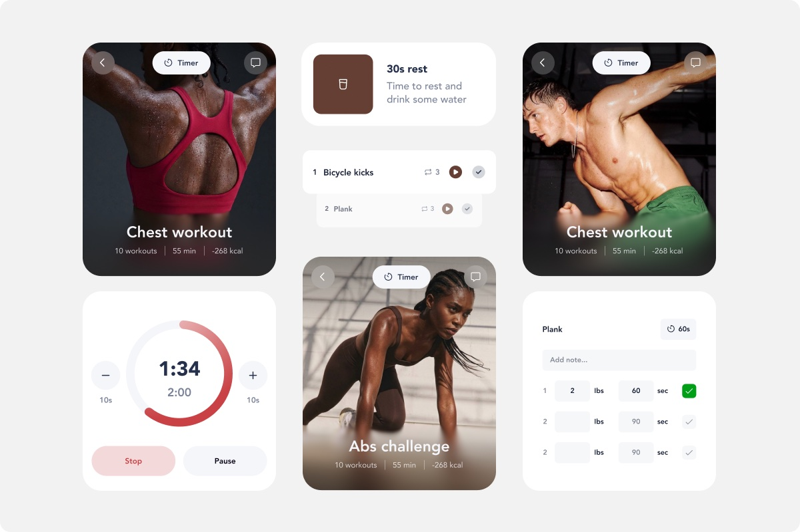

Playbook logging feature
The problem
Playbook is a fitness app with training programs from expert coaches. Users could follow workouts, but had no way to record their results or leave notes, so they couldn't see whether they were actually progressing.

Client brief

What users needed
- See progress: how weight and reps grow over time.
- Compare max effort with previous sessions and with the coach's numbers.
- Share personal bests with others.

Starting point
To make it easier to start logging, we added a Workout Log button to the tab bar and moved the Timer into the header, since users told us they needed it to be more visible.

Timer experience
We moved the Timer into the header so it’s always one tap away. In the modal, users can add or subtract 10 seconds, pause, or stop. Once they close it, the countdown keeps running in the header, and they can tap it to get back to the controls.

Logging Screen
The coach's recommended values are pre-filled, so users only adjust what changed. Units vary between workouts, so each unit sits right next to its field and it's always clear what to enter.

Custom Keyboard
Users can log a whole workout without leaving the keyboard: +/− adjust a value, Prev/Next jump between fields. No precise tapping on small cells mid-workout.

Logging History
All logs live in a History tab next to Logging, grouped by date, with search to find any exercise quickly.

Variety of palettes
Coaches can choose their own color palette. We kept the UI neutral and limited color to a few accent elements, so any palette from the system looks balanced, never busy.

Conclusion
The feature is live. Playbook users can now record every workout, keep notes, and compare results over time, which turns the app from a program library into a progress tracker.